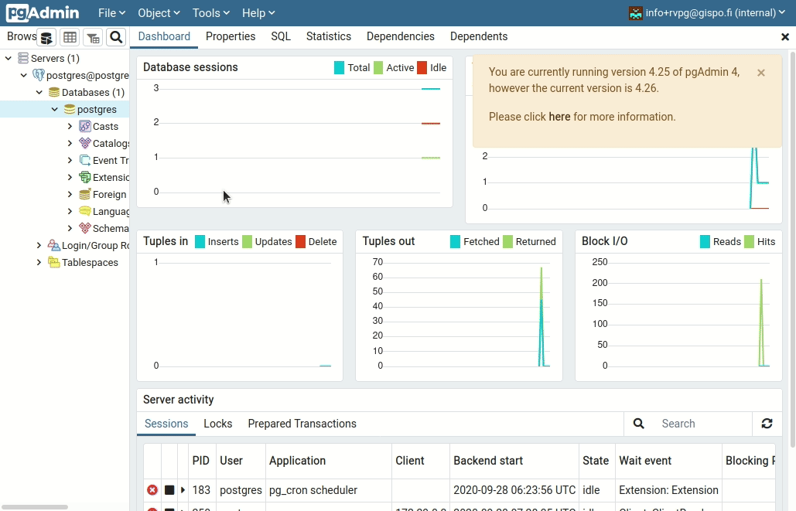
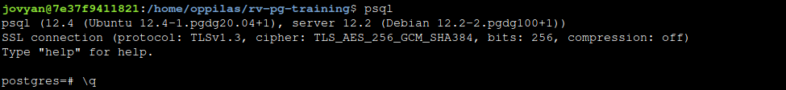

2 Harjoitus 1: Työkalujen käyttöönotto
Harjoituksen sisältö - Harjoituksessa tutustutaan pgAdmin 4 -käyttöliittymään sekä psql:ään. Lisäksi harjoituksessa luodaan uusi paikkatietokanta.
Harjoituksen tavoite - Harjoituksen jälkeen opiskelija hallitsee pgAdmin 4 -käyttöliittymän ja psql:n perusteet.
2.1 Harjoitus 1.1: pgAdmin 4
Käynnistä pgAdmin 4 -ohjelmisto menemällä osoitteeseen /pgadmin. Pääset kirjautumaan etäpalvelimen pgAdminiin seuraavilla tunnuksilla:
Sähköpostiosoite: email@email.com
Salasana: pgtraining

pgAdmin- kirjautuminen
2.1.1 Tietokantayhteyden lisääminen
Liitä pgAdmin-ohjelmaan koulutusympäristön tietokanta klikkaamalla hiiren oikealla kohdasta Servers ja valitsemalla Register > Server…
Syötä seuraavat tiedot:
- General-välilehdellä
- Name: yhteyden nimi (tyypillisesti <käyttäjänimi>@<tietokanta>)
- Connection-välilehdellä
- Host: dbhost
- Port: 5432
- Maintenance database: postgres
- Username: postgres
- Password: password
- Valitse Save password, jos et halua kirjoittaa salasanaa uudelleen aina avatessasi yhteyden
Voit tarkastella asennettua tietokantaa pgAdmin:n avulla yläpalkin eri välilehdiltä:

PostGIS-tietokantoja voidaan hyödyntää pgAdmin:n lisäksi myös muissa sovelluksissa (psql-komentorivin tai QGISin Tietokannan hallinta (DB Manager) -lisäosan kautta). Tältä tietokanta näyttää QGISin Tietokannan hallinnassa:

2.1.2 Harjoitustietokannan luonti
Luodaan koulutusta varten trainingdatabase-niminen harjoitustietokanta. Tämän voi tehdä pgAdmin:n graafisen käyttöliittymän kautta:

Huom! Tietokannan voi luoda ja poistaa myös seuraavien SQL-lauseiden avulla:
CREATE DATABASE trainingdatabase;
DROP DATABASE trainingdatabase;
2.1.3 SQL-komentojen suorittaminen
Koulutuksessa tullaan suorittamaan useita harjoituksia SQL-komentokielen avulla. pgAdmin:n Kysely-työkalun (Query Tool) avulla voit suorittaa SQL-kyselyitä ja lausekkeita. Query Tool käynnistetään seuraavasti:
- Valitse Servers-osiosta oma tietokantaklusterisi
- Valitse klusterin sisältä haluamasi tietokanta (trainingdatabase)
- Valitse ylhäältä Tools > Query Tool
Haluttu SQL-komento suoritetaan painamalla avautuvasta Query Tool -ikkunasta löytyvää kolmio-painiketta (Execute/Refresh) tai F5-näppäintä. Jos haluat suorittaa vain osan SQL-lausekkeesta, väritä hiirellä mieleisesi osio ja paina F5. Näet alaikkunassa komennon tuloksen. Voit myös tallentaa SQL-komentosi .sql-tiedostoon, josta ne voi myöhemmin ladata.

Nyt voidaan lisätä PostGIS-lisäosa trainingdatabase-tietokantaan seuraavalla SQL-komennolla:
CREATE EXTENSION IF NOT EXISTS postgis;Mitä spatial_ref_sys-taulu sisältää?
Mitä näkymiä (views) on tietokantaan muodostunut? Mitä tietoja ne sisältävät?
Uusi taulu voidaan luoda kirjoittamalla seuraava SQL-komentojono Query Tool:n SQL-editoriin.
-- PostgreSQL ja PostGISin perusteet
CREATE TABLE test_tmp(
id serial,
time time,
num integer);Huomaa, että kahdella viivalla “–” alkavat rivit ovat kommenttirivejä, eikä niitä oteta huomioon SQL-komentoa suoritettaessa.
Tauluja voi luoda myös SQL-kyselyiden tulosten perusteella.
Lisätään yllä luotuun tauluun tietueita seuraavalla SQL-komennolla:
INSERT INTO test_tmp (time,num)
(SELECT now(), generate_series(1,5000));Tietueita voi lisätä myös SQL-kyselyjen tulosten perusteella.
Voit listata tauluusi tekemiä tietueita esimerkiksi seuraavalla komennolla:
SELECT *
FROM test_tmp
LIMIT 10;Voit poistaa luodun taulun seuraavalla komennolla:
DROP TABLE test_tmp;2.1.4 Tietokantayhteyden sulkeminen
Klikkaa hiiren oikealla luomasi yhteyden päällä ja valitse Disconnect from server.
2.1.5 pg_dump ja pg_restore
Tietokannan tai yksittäisten taulujen varmuuskopioiden luomiseen ja palauttamiseen on omat komentoriviohjelmansa: pg_dump ja pg_restore. Muun muassa pgAdmin käyttää näitä sisäisesti.
2.2 Harjoitus 1.2: psql
SQL-komentoja voi suorittaa pgAdminin (ja QGISin Tietokannan hallinta -lisäosan) lisäksi myös psql-komentorivin kautta. Avaa komentorivi, jotta pääset käyttämään psql-komentorivityökalua. Kirjaudu ensin sisään WeTTY- terminaaliemulaattoriin:
- Username: student
- Password: pgtraining
Ota yhteys omaan tietokantaklusteriisi komennolla:
psql -U postgres -h dbhost
2.2.1 psql:n käyttäminen
Kun psql on käynnistetty, komentoriville voi kirjoittaa sekä psql- että SQL-komentoja. psql-session aikana käytettäviä komentoja kutsutaan psql-interaktiivisiksi.
Alla muutama esimerkki interaktiivisista psql-komennoista:
\d = näytä taulut, näkymät ja sekvenssit
\dg = näytä tietokantaklusterin roolit (käyttäjät)
\c tietokannan_nimi = yhdistä tietokannan_nimi -tietokantaanKomennolla help ja erityisesti komennolla \? saat tietoa ohjelman
eri komennoista. Pääset pois listauksesta painamalla q.
Komentorivin puolella käytettäviä psql-komentoja kutsutaan ei-interaktiivisiksi. Ei-interaktiivisia psql-komentoja käytetään silloin kun halutaan käyttää psql:aa suoraan käyttöjärjestelmän komentorivista ja valittavat psql-komennot sekä SQL-skriptit ovat tiedostossa. Ei-interaktiivinen psql soveltuu erityisen hyvin tehtävien automaatisointiin. Edellä mainitut yhteydenottokomennot ovat oivia esimerkkejä ei-interaktiivisista psql-komennoista. Kokeile ajaa seuraava komento komentorivillä:
psql -U postgres -h dbhost -c "select current_database();"2.2.2 Tietokannan luonti
createdb on komentorivityökalu helpottamaan tietokannan luomista. Helpoimmillaan uuden tietokannan luominen onnistuukin komennolla:
createdb -U postgres -h dbhost uuden_tietokannan_nimi
2.2.3 Tietokannan poistaminen
dropdb samoin kuin createdb on komentorivityökalu. Helpoimmillaan tietokannan voi poistaa komennolla:
dropdb -U postgres -h dbhost poistettavan_tietokannan_nimi2.2.4 Tietokantayhteyden sulkeminen
Kun haluat sulkea tietokantayhteyden, anna psql-ohjelmassa komento:
\q
2.2.5 Tiedot asennuksista
PostgreSQL:n version voit kysyä SQL-komennolla:
SELECT version();Asennetut lisäosat voit tarkistaa SQL-lauseella:
SELECT *
FROM pg_extension;2.2.6 Muita huomioita
Jos haluat käyttää PostGIS-tietokantaa muilta tietokoneilta, tulee PostgreSQL:n määrittelytiedostoon (pg_hba.conf) tehdä muutamia tarvittavia muutoksia, esimerkiksi seuraavasti:
# IPv4 local connections:
#host all all 127.0.0.1/32 md5
host all all 0.0.0.0/0 trustMuutokset on tehty koulutuksessa käytettävälle PostgreSQL-asennukselle jo valmiiksi.
HUOM! Tämä muutos mahdollistaa yhteydenoton mistä tahansa tietokoneesta ja on turvallisuusriski tuotannollisissa tietojärjestelmissä.
Oletuksena yhteys tietokantaan on suojaamaton. Tietokantayhteys suositellaan salattavaksi SSL:n avulla.